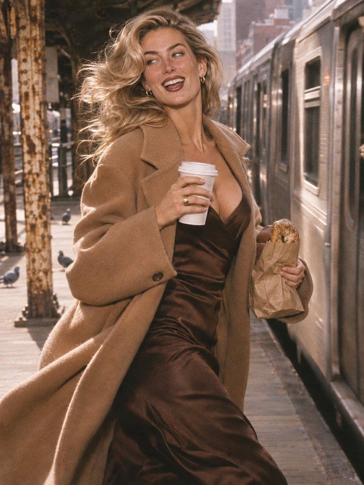

90s supermodel on the L platform: 85mm, 35mm film look, hard flash plus hazy winter sun, in a reusable labelled template
GRN-097Grain / Filterunknownby @antrospike2026-11-24

A short field template (Style / Shot / Hair-outfit / Pose-expression / Setting-light / Palette-framing / Negative) that produces a flash-on-film fashion still: camel overcoat, satin midi, coffee and bagel, looking back as the train doors close. Swap the fields for any 90s-campaign look.
Prompt
Style: 90s Supermodel Shot: Medium shot, 85mm, 35mm film look, hard flash, grain Hair/outfit: Young woman in her mid-20s, big glossy blonde blowout, chocolate-brown bias-cut satin midi dress with a V-neckline under an oversized camel overcoat, chunky black loafers, thin gold hoops, brown lip liner Pose/face expression: Hurrying along an elevated train platform holding a paper coffee cup and a bagel bag, looking over her shoulder as the train doors close behind her. Breathless playful grin, wide eyes Setting/light: Chicago elevated train platform on a cold morning with rusty steel beams and pigeons, hazy winter sun plus a hard camera flash Palette/framing: Camel, chocolate brown, steel grey. Vertical 3:4. Negative: no text, no readable station signs, no watermark, no signature, no extra fingers, no cartoon look.
Tags: 35mm film look, hard flash, grain, 90s supermodel, fashion editorial, template fields, street